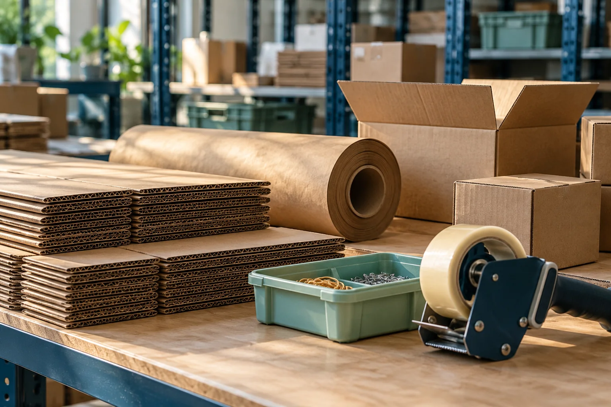

GOOD SUPPLY.LESS CHASING.
For the purchases that keep your business moving.
Clear details. Comparable quotes. Someone on the follow-up.
Everyday buying, brought together
A LITTLE COORDINATION.
A LOT LESS
LOOSE ENDS.
A quote in an inbox. An approval in a chat. A delivery date nobody has confirmed.
QShip is a purchasing coordination concept that brings the details, decisions and open actions into one clear working record. Built around your suppliers and the way your team already works.
Find your starting pointA clearer view of the work
WHERE COULD
WE TAKE THE
CHASING OUT?
Explore three places a focused coordination pilot could begin.

The things you order.
Again. And again.
Packaging, everyday consumables and other repeat purchases. A proposed pilot would bring the specification, ordering rhythm and supplier questions into one manageable scope.
Start with one recurring categoryAn extra pair of eyes
SMALL DETAILS.
BETTER QUESTIONS.

Your business stays in control
YOUR SUPPLIERS.
YOUR DECISIONS.
OUR FOLLOW-UP.
QShip’s proposed role is to organize the work around a purchase. Your business selects suppliers, approves commitments and pays them directly.
See where the responsibility sitsA focused scope
BUILT TO SUPPORT
YOUR TEAM.
Start with one recurring supply category, an agreed vendor group and a named approver. A manageable pilot comes before a broader engagement.
QShip would coordinate
The request, supplier clarifications, comparison record and open follow-ups.
Your team would decide
Specifications, suppliers, approvals, direct payments and acceptance of any resolution.
Agree the scope first
Availability, response expectations, responsibility and any fees would be agreed before work begins.
This service concept does not offer carriage, freight brokerage, customs services, inventory ownership or handling of client funds.
Pilot enquiries
WHAT KEEPS
COMING BACK
TO YOUR DESK?
Tell us about one repeat purchase and where the handoff gets stuck. We can discuss whether a focused coordination pilot would make sense.
Would we need new purchasing software?
The proposed manual pilot would work alongside your existing records. Any integration would need its own scope.
Is QShip taking orders today?
The service is in development. This enquiry is an expression of interest; it does not create an order, contract or supplier instruction. Scope and availability must be agreed first.